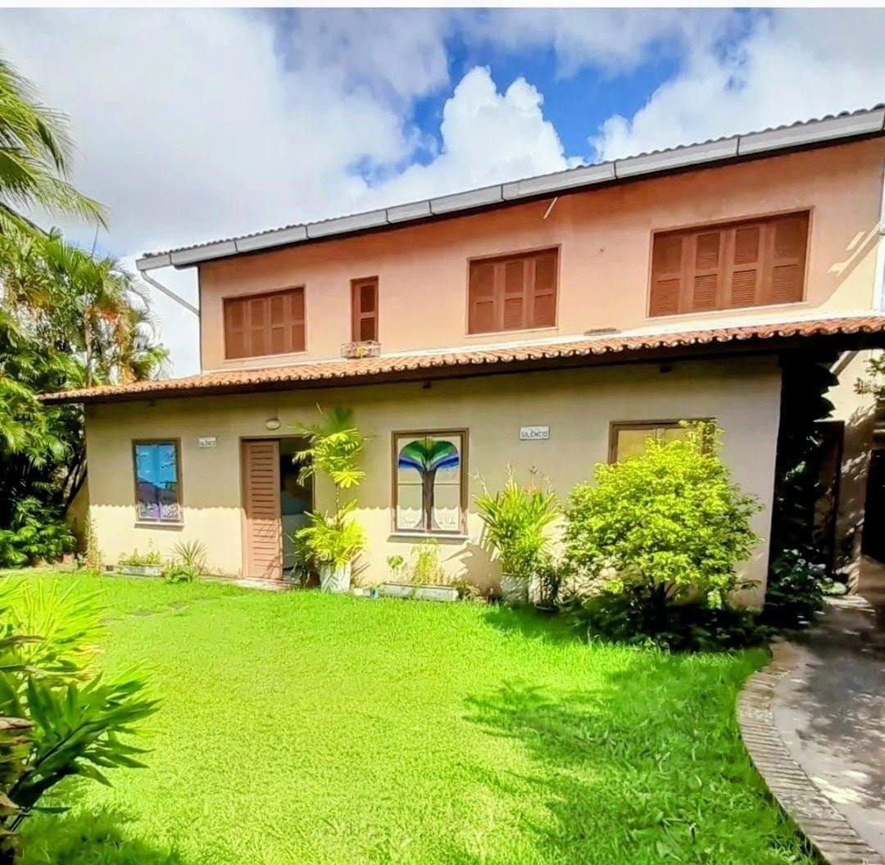

Primeiro contato
Você chama no WhatsApp, tira dúvidas e verifica os horários disponíveis.
Atendimento psicológico para quem sente ansiedade, excesso de pensamentos, tensão emocional ou dificuldade para desacelerar.
CRP 11/03883 | Psicóloga Clínica
Especialista em Terapia Cognitivo-Comportamental (TCC), com 20 anos de experiência no atendimento psicológico de adultos.
Oferece atendimento psicológico ético, humanizado e personalizado, utilizando técnicas baseadas em evidências científicas para auxiliar cada paciente no desenvolvimento do autoconhecimento, do equilíbrio emocional e da melhoria da qualidade de vida.
Cada processo terapêutico é conduzido com acolhimento, respeito e compromisso, considerando as necessidades e os objetivos individuais de cada pessoa.
Você chama no WhatsApp, tira dúvidas e verifica os horários disponíveis.
Na primeira sessão, suas necessidades são acolhidas com calma e sigilo.
O acompanhamento é conduzido de forma ética, individualizada e humanizada.
Sintomas como preocupação constante, irritabilidade, insônia, medo, tensão no corpo ou sensação de sobrecarga podem indicar que é hora de cuidar da saúde emocional.

Um ambiente tranquilo, reservado e preparado para acolher sua história.
Agende sua consulta pelo WhatsApp e verifique disponibilidade de horários.